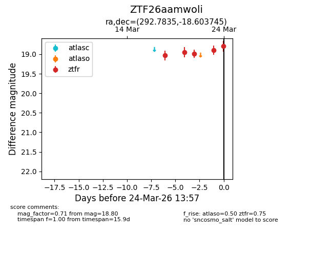
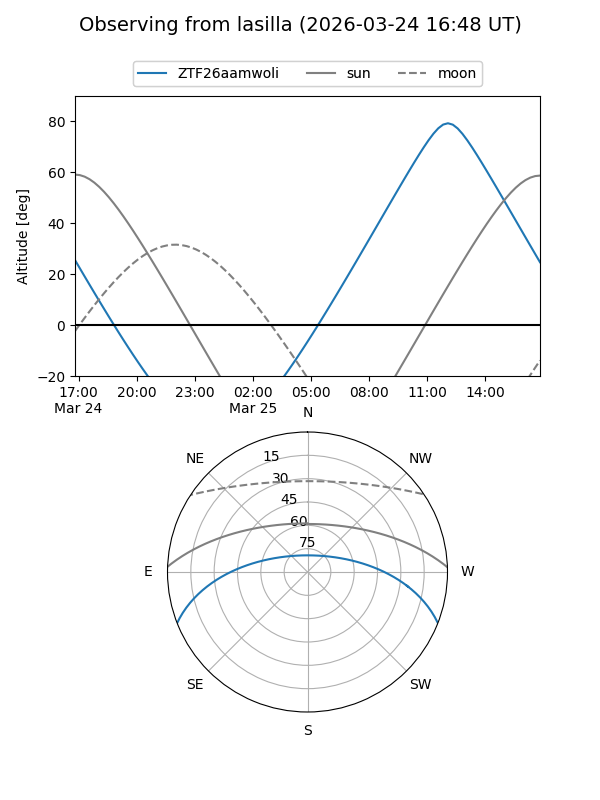
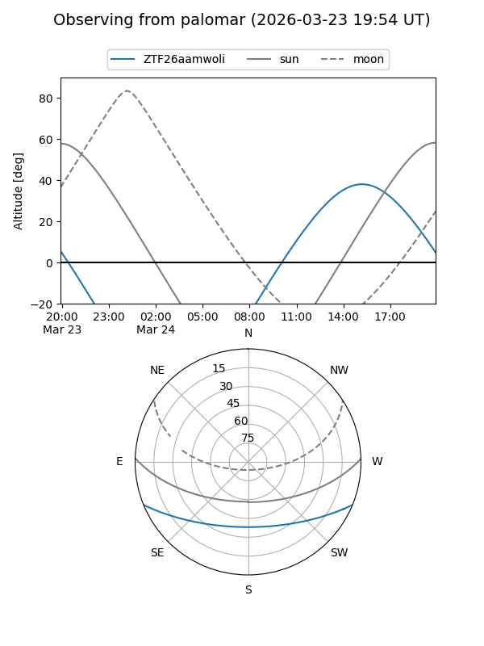

ZTF26aamwoli
Target ZTF26aamwoli at 2026-03-24 14:00
Aliases and brokers:
FINK: link
Lasair: link
ALeRCE: link
alt names
ZTF26aamwoli (ztf,fink_ztf)
Coordinates:
equatorial (ra, dec) = 292.7835,-18.60374
equatorial (HMS+DMS) = 19:31:08.03,-18:36:13.48
galactic (l, b) = (20.2869,-16.90800)
Flags:
Photometry:
last atlaso=nan, ztfr=18.80
1 atlaso, 5 ztfr detections
Lightcurve

Visibility


Additional plots